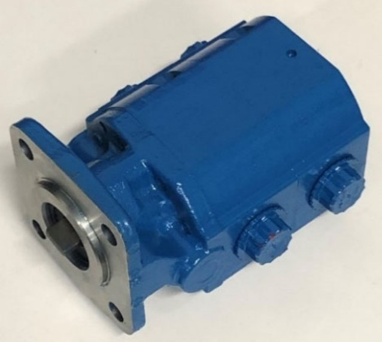
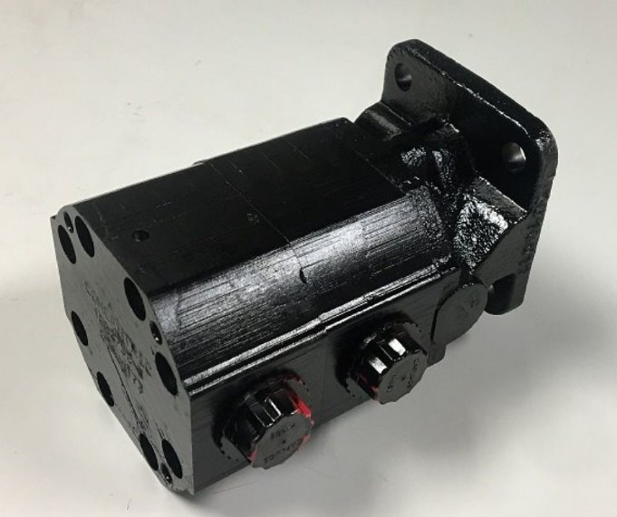

Doc no. MOC-TSB-19-05 // Vol. 19 No. 05 // Dec 30, 2019 // Transmission
High Flow Double Pump
MOC has learned that certain vehicles with a high flow transmission may not receive all the recommended transmission fluid while performing a cooler line transmission flush service on one of these vehicles. For example, the GM 6L80 transmission is high flow. To alleviate this concern, MOC has developed a new high flow double pump for use in all ATF machines. In the NON-Smart Tech ATF machines, using the high flow double pump while servicing a high flow transmission results in a virtual 1 to 1 exchange. Similarly, in the Smart Tech ATF machines, using the high flow double pump along with Flow Restrictor Part No. 94943 on a high flow transmission will result in an exchange within a safe operating range. This new Double Pump is Part No. 94857. This pump has a blue body and is interchangeable with the current double pump.
What's new
Contact
For more information, contact the Machine & Equipment Department at 866.244.6621.


Part numbers
| Part No. | Description | Notes |
|---|---|---|
| 94943 | Restrictor, High Flow Transmission | |
| 94857 | PUMP, DOUBLE, HIGH FLOW Decal Placement reference |